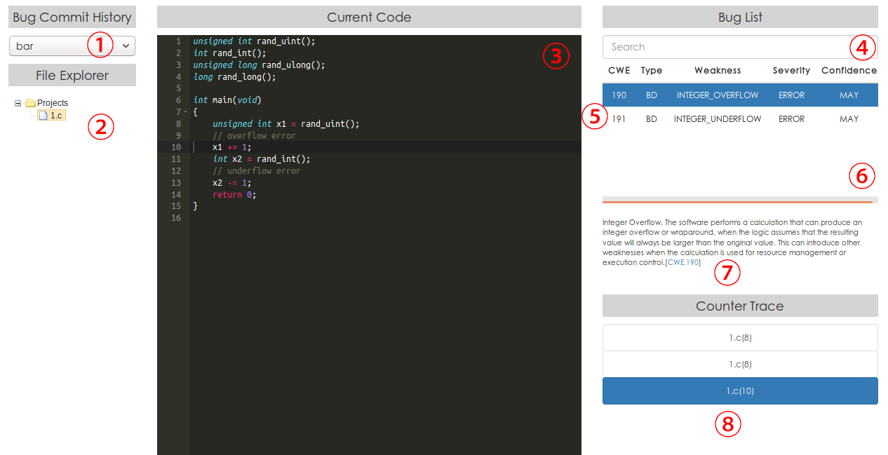

Tsmart is a static analyzer for C source code. Given a C program, Tsmart outputs a report which contains a list of potential defects and how they could be triggered in program execution. Currently the latest version of Tsmart is 2.0 released on Dec 16, 2017.
Static analysis offers static compile-time techniques for predicting safe and computable approximations to the set of values or behaviors arising dynamically at runtime when executing a program. The main applications of static analysis include allowing compilers to generate more optimized code and reducing the likelihood of malicious or unintended behavior of programs.
It is almost impossible to write a bug-free program. Although developers employ tests to validate the program functionality, there could still be a substantial number of potential defects which could only be manifested by corner inputs. Tsmart can be utilized to improve the quality of source code in the terms of reliability and security by finding bugs that reside deeply inside programs
The overall schematic overview of Tsmart is shown as follows.
To use Tsmart for static analysis, users should specify the program files to be analyzed, the types of defects to be checked, and the output location of analysis results. Tsmart analyzes the input source files fully automatically and then generates a report on potential bugs with the information including bug locations and execution paths for detected bugs.
Tsmart has 3 main working modes:
| # | Term | Definition |
|---|---|---|
| 1 | Simple Check | Tsmart's working mode on which a collection of source files is checked against the specified types of defects. |
| 2 | Build-capture | Build-capture replaces compilation commands in Makefile with the corresponding preprocessing commands and produces one or more analysis tasks, each of which consists of pre-processed source files and corresponds to a target in Makefile. |
| 3 | Analysis Task | An analysis task is a module that consists of one or more preprocessed source files and corresponds to a target in Makefile. |
| 4 | Compound Check | Tsmart's working mode on which a C project is checked against the specified types of defects. |
| 5 | Phase | A phase is an indivisible step in static analysis. Common phases include program parsing, semantics analysis and results processing. |
| 6 | CWE | The Common Weakness Enumeration (CWE) is a category system for software weaknesses and vulnerabilities. It is sustained by a community project with the goals of understanding flaws in software and creating automated tools that can be used to identify, fix, and prevent those flaws. The project is sponsored by the National Cybersecurity FFRDC, which is owned by The MITRE Corporation, with support from US-CERT and the National Cyber Security Division of the U.S. Department of Homeland Security. The official homepage of CWE is https://cwe.mitre.org |
| 7 | Data-flow Analysis | Data-flow analysis is a technique for gathering information about the possible set of values calculated at various points in a computer program. |
| 8 | Abstract Interpretation | Abstract interpretation is a theory of sound approximation of the semantics of computer programs, based on monotonic functions over ordered sets, especially lattices. It can be viewed as a partial execution of a computer program which gains information about its semantics. |
| 9 | Counterexample | In term of program analysis, a counterexample is a concrete execution that triggers a certain defect. |
| # | Internal Name | CWE | CWE Name | Description | |
|---|---|---|---|---|---|
| 1 | INTEGER_OVERFLOW |
190 | Integer Overflow or Wraparound | The software performs a calculation that can produce an integer overflow or wraparound, when the logic assumes that the resulting value will always be larger than the original value. This can introduce other weaknesses when the calculation is used for resource management or execution control. | |
| 2 | INTEGER_UNDERFLOW |
191 | Integer Underflow (Wrap or Wraparound) | The product subtracts one value from another, such that the result is less than the minimum allowable integer value, which produces a value that is not equal to the correct result. | |
| 3 | UNEXPECTED_SIGN_EXT |
194 | Unexpected Sign Extension | The software performs an operation on a number that causes it to be sign extended when it is transformed into a larger data type. When the original number is negative, this can produce unexpected values that lead to resultant weaknesses. | |
| 4 | SIGNED_TO_UNSIGNED |
195 | Signed to Unsigned Conversion Error | The software uses a signed primitive and performs a cast to an unsigned primitive, which can produce an unexpected value if the value of the signed primitive can not be represented using an unsigned primitive. | |
| 5 | UNSIGNED_TO_SIGNED |
196 | Unsigned to Signed Conversion Error | The software uses an unsigned primitive and performs a cast to a signed primitive, which can produce an unexpected value if the value of the unsigned primitive can not be represented using a signed primitive. | |
| 6 | LOSSY_TRUNCATION |
197 | Numeric Truncation Error | Truncation errors occur when a primitive is cast to a primitive of a smaller size and data is lost in the conversion. | |
| 7 | DIV_ZERO |
369 | Divide By Zero | The product divides a value by zero. | |
| 8 | DEAD_CODE |
561 | Dead Code | The software contains dead code, which can never be executed. | |
| 9 | ALWAYS_TRUE |
571 | Expression is Always True | The software contains an expression that will always evaluate to true. | |
| 10 | ALWAYS_FALSE |
570 | Expression is Always False | The software contains an expression that will always evaluate to false. | |
| 11 | UNUSED_VARIABLE |
563 | Assignment to Variable without Use | The variable's value is assigned but never used, making it a dead store. | |
| 12 | INVALID_FREE |
590 | Free of Memory not on the Heap | The application calls free() on a pointer to memory that was not allocated using associated heap allocation functions such as malloc(), calloc(), or realloc(). |
|
| 13 | 415 | Double Free | The product calls free() twice on the same memory address, potentially leading to modification of unexpected memory locations. |
||
| 14 | 761 | Free of Pointer not at Start of Buffer | The application calls free() on a pointer to a memory resource that was allocated on the heap, but the pointer is not at the start of the buffer. |
||
| 15 | 690 | Unchecked Return Value to NULL Pointer Dereference | The product does not check for an error after calling a function that can return with a NULL pointer if the function fails, which leads to a resultant NULL pointer dereference. | ||
| 16 | 404 | Improper Resource Shutdown or Release | The program does not release or incorrectly releases a resource before it is made available for re-use. | ||
| 17 | INVALID_READ |
476 | NULL Pointer Dereference | A NULL pointer dereference occurs when the application dereferences a pointer that it expects to be valid, but is NULL, typically causing a crash or exit. | |
| 18 | 126 | Buffer Over-read | The software reads from a buffer using buffer access mechanisms such as indexes or pointers that reference memory locations after the targeted buffer. | ||
| 19 | 127 | Buffer Under-read | The software reads from a buffer using buffer access mechanisms such as indexes or pointers that reference memory locations prior to the targeted buffer. | ||
| 20 | 416 | Use After Free | Referencing memory after it has been freed can cause a program to crash, use unexpected values, or execute code. | ||
| 21 | INVALID_WRITE |
121 | Stack-based Buffer Overflow | A stack-based buffer overflow condition is a condition where the buffer being overwritten is allocated on the stack (i.e., is a local variable or, rarely, a parameter to a function). | |
| 22 | 122 | Heap-based Buffer Overflow | A heap overflow condition is a buffer overflow, where the buffer that can be overwritten is allocated in the heap portion of memory, generally meaning that the buffer was allocated using a routine such as malloc(). |
||
| 23 | 124 | Buffer Underwrite ('Buffer Underflow') | The software writes to a buffer using an index or pointer that references a memory location prior to the beginning of the buffer. | ||
| 24 | MEMORY_LEAK |
401 | Improper Release of Memory Before Removing Last Reference ('Memory Leak') | The software does not sufficiently track and release allocated memory after it has been used, which slowly consumes remaining memory. | |
| 25 | 775 | Missing Release of File Descriptor or Handle after Effective Lifetime | The software does not release a file descriptor or handle after its effective lifetime has ended, i.e., after the file descriptor/handle is no longer needed. | ||
| 26 | STACK_ADDRESS_RETURN |
562 | Return of Stack Variable Address | A function returns the address of a stack variable, which will cause unintended program behavior, typically in the form of a crash. |
Tsmart is CWE-compatible, and the details are demonstrated in the following table.
| Requirement | Description | Implementation |
|---|---|---|
| CWE Searchable | users may search security elements using CWE identifiers | Bug report can be filtered by CWE identifiers (ref. Review of Analysis Results) |
| CWE Output | security elements presented to users includes, or allows users to obtain, associated CWE identifiers | Each defect entry in bug report has a CWE field which records the possibly corresponding CWE identifiers (ref. Review of Analysis Results) |
| Mapping Accuracy | security elements accurately link to the appropriate CWE identifiers | The Capability of Tsmart gives the relation from defect types in Tsmart to CWE identifiers |
| CWE Documentation | capability's documentation describes CWE, CWE compatibility, and how CWE-related functionality in the capability is used | Terms introduces the concept of CWE. This section introduces CWE-compatibility and how CWE-related functionality is used in Tsmart. |
| CWE Coverage | for CWE-Compatibility and CWE-Effectiveness, the capability's documentation explicitly lists the CWE-IDs that the capability claims coverage and effectiveness against locating in software | The Capability of Tsmart gives the supported CWE identifiers by Tsmart. |
For more information on CWE-compatibility, please visit https://cwe.mitre.org/compatible/index.html
A major release of Tsmart is scheduled in December every year. The improvements in a major release mainly include: (1) resolving bugs in the previous version; (2) adding supports for some defect types uncovered in the previous version; (3) updating CWE capability mapping in terms of tool and documentation according to the update of CWE.
Users can mail to tsmart.project@gmail.com for an evaluation copy or a technical support.
| Minimum | Recommended | |
|---|---|---|
| Operating System | 32-bit/64-bit Linux | 64-bit Ubuntu 16.04LTS or newer |
| CPU | 3GHz Intel (R) Core2 Duo | Intel Core i5(2.66GHz) or better |
| Memory | 2GB for 32-bit system, 4GB for 64-bit system | more than 8GB |
| Disk Space | more than 2GB | more than 2GB |
| Software | Version | Availability |
|---|---|---|
| Java | 8 or higher | http://openjdk.java.net/install/ |
| Python 2 | 2.7 or higher | https://www.python.org/downloads/ |
| Requests | 2.8.14 or higher | install via pip |
| Python 3 | 3.5 or higher | https://www.python.org/downloads/ |
| Apache Ant | 1.9 or higher | https://ant.apache.org/bindownload.cgi |
| Z3 | 4.5.0 or higher | https://github.com/Z3Prover/z3 |
Please mail to tsmart.project@gmail.com for a demo version of Tsmart.
The components of Tsmart are listed as follows.
| Component | Directory | File or Folder | Functionality |
|---|---|---|---|
| TsmartBD | tsmart-v2/ |
lib/ |
Dependencies for Tsmart |
| TsmartBD | tsmart-v2/ |
config/ |
Preset configurations for Tsmart |
| TsmartBD | tsmart-v2/ |
TsmartBuild.jar |
Build-capture executable |
| TsmartBD | tsmart-v2/ |
TsmartAnalyze.jar |
The main entry of Tsmart |
| BugVisualizer | bug_visualizer/ |
server.py |
The server for management of analysis results |
| BugVisualizer | bug_visualizer/ |
upload_sh.py |
Upload the analysis results and relevant source code to the server |
| BugVisualizer | bug_visualizer/ |
bug_history/ |
The history of analysis results |
| BugVisualizer | bug_visualizer/ |
visualizer.html |
Webpage template for BugVisualizer |
Extract the compression archive of Tsmart to somewhere. The target path should only contain A-Z, a-z, 0-9 or _ to avoid unpredictable issues.
The main entry of Tsmart is TsmartAnalyze.jar. Users can specify the working mode, the input source code and the output location of analysis results via command line arguments. The supported arguments are listed as follows.
| Argument | Usage | Explanation |
|---|---|---|
-build |
-build=[BUILD_PATH] make |
Perform build-capture for the project under [BUILD_PATH] with make |
-captured |
-captured=[CAPT_PATH] |
Specify the build-captured project under [CAPT_PATH] for static analysis |
-manual |
-manual [SRC_PATH] |
Specify a collection of source files ([SRC_PATH] is the list of source paths) for static analysis |
-cwe |
-cwe=[CWE_LIST] |
Specify the target defects via CWE identifiers [CWE_LIST] (Note: SHOULD NOT use -config when -cwe is used) |
-task |
-task=[TASK_NO_LIST] |
Specify the tasks to be analyzed by task numbers in [TASK_NO_LIST] |
-taskName |
-taskName=[TASK_NAME_LIST] |
Specify the tasks to be analyzed by task names in [TASK_NAME_LIST] |
-output |
-output=[OUTPUT_PATH] |
Specify [OUTPUT_PATH] as the location of output analysis results |
-config |
-config=[CONFIG_PATH] |
Specify [CONFIG_PATH] as the configuration (Note: SHOULD NOT use -config when -cwe is used) |
-list |
-list |
Enumerate available analysis tasks for a compound check |
-version |
-version |
View the version of Tsmart |
Perform static analysis on a collection of source files. The input source files could contain header files which are processed by preprocessor in Tsmart. The command for simple check is as follows.
> java -jar TsmartAnalyze.jar -manual [SRC_PATH] -cwe=[CWE_LIST] (-output=[OUTPUT_PATH])
-manual is required while -output is optional. If -output is not specified, the results are output to output\ under the root location of TsmartBD module. Furthermore, users can specify multiple CWE identifiers split by commas in the -cwe argument. For example, -cwe=190,369 makes Tsmart to check the defects of CWE 190 (integer overflow) and CWE 369 (division-by-zero). In fact, -cwe argument specifies preset configurations associated with CWE identifiers. If it is necessary to tweak analysis algorithm in a more fine-grained manner, users can specify a configuration file via -config argument.
Perform static analysis on a C project based on Makefile compilation system. In some cases Makefile needs to be generated first, typically by invoking the following command in the root directory of the project.
> ./configure
If the input C project has not been pre-processed, build-capture is necessary in prior to analysis. The output of build-capture is stored under .process_makefile/ in the root directory of the input project. The command for compound check with build-capture is as follows.
> java -jar TsmartAnalyze.jar -build=[BUILD_PATH] make -cwe=[CWE_LIST] -task=[TASK_NO_LIST] (-output=[OUTPUT_PATH])
The required argument -build=[BUILD_PATH] make denotes that using make to handle the Makefile in the project under [BUILD_PATH]. The -task argument is to specify the analysis task(s) to be analyzed and is optional. If the -task argument is absent, all the analysis tasks in the build-captured project are to be analyzed. Furthermore, the -task argument can be replaced with the -taskName argument which specifies the names of analysis tasks to be analyzed.
Note that, performing build-capture on a build-captured project would arise runtime errors. Let path/to/project be the path of the input project, then the following commands restore a build-captured project to its original status.
> cd path/to/project
> make clean
> rm -rf .process_makefile/
It is possible to build-capture a project without performing static analysis by invoking TsmartBuild.jar. Let path/to/project be the path of the input project, build-capture can be performed by invoking the following commands in order:
> cd path/to/project
> ./configure
> java -jar TsmartBuild.jar -shell=/bin/bash make
Next, invoke the following command to perform static analysis on a build-captured project:
> java -jar TsmartAnalyze.jar -captured=[CAPT_PATH] -cwe=[CWE_LIST] -task=[TASK_NO_LIST] (-output=[OUTPUT_PATH])
where -captured is the path of the build-captured project and should be in the form of path/to/project/.process_makefile/.
To review analysis results, the server for management of analysis results should be started first. This is because development members can examine the potential bugs individually by sharing analysis results. On the server side, enter the bug_visualizer directory and execute the following command:
python server.py ([port_number])
where port_number denotes the port number. If port_number is absent, port 8080 is employed by default.
Let [server_ip] be the IP of the server side. Then execute the following command on the machine on which the static analysis is performed to upload analysis results along with the source files to the server.
python3 upload_sh.py --name=[task_name] --build=[build_path] --captured=[capture_path] --manual=[src_list] --xml=[xml_file] --server=[server_ip] --port=[port_number]
The requirement argument --name specifies a name for current analysis. Only one (and at least one) argument in --build, -captured and --manual is used and should be consistent with the corresponding argument in invoking TsmartAnalyze.jar. For example, if we use --captured [CAPT_PATH] in invoking TsmartAnalyze.jar, then --captured [CAPT_PATH] should be used in invoking upload_sh.py here. The argument --xml specifies the location of analysis result .xml file. If -output is unspecified in invoking TsmartAnalyze.jar, the location of analysis results is at tsmart-v2/output/result.xml; otherwise result.xml can be retrieved under [OUTPUT_PATH]. --server and --port specify the IP of server side and its port, respectively.
If upload succeeds, upload_sh.py prints 上传成功 or finished.
To view the analysis results, please visit http://[server_ip]:[port_number]/visualizer.html on a web browser. Note that the webpage of bug visualizer is tested on the latest version of Firefox and Chrome. Compatibility on other web browsers is not guaranteed. The webpage of bug visualizer is as follows.

To adjust the analysis algorithm employed by Tsmart in a fine-grained manner, the underlying configuration files should be tweaked. Overall, Tsmart employs a 3-level configuration system.
The following snippet shows an example of top configuration file:
phase.manager.config = top.range.config
phase.manager.executionType = SEQUENTIAL
statistics.kind = HIERARCHICAL
error.export.mode = XML
function.adapters = RangeFunctionAdapter
function.RangeFunctionAdapter = map/alias.map
function.stopFunctions = exit, abort, error, error_at_line
phase.manager.config specifies the referred phase configuration file. phase.manager.executionType specifies the scheduling type for phases, and SEQUENTIAL means that phases are executed sequentially. In general, statistics.kind is set as HIERARCHICAL in order to support multi-entry analysis. error.export.mode should be set as XML in order to output .xml files correctly for displaying analysis results in bug visualizer. function.adapter specifies the library function support module while multiple modules are split by commas. function.RangeFunctionAdapter specifies the function name aliases (e.g. assume that library functions f1 and f2 have the identical operational semantics, then we only need to set f2 as an alias of f1 if the semantics of f1 is implemented in an employed library function support module) for the library function support module named RangeFunctionAdapter. function.stopFunctions specifies a list of stop functions in use. A stop function refers to a function that never returns.
The following snippet shows an example of a phase configuration file:
.SET
DIR = org.sosy_lab.cpachecker.core.phase;
.TES
.DEF cfa
.TYPE = $(DIR).CFACreatePhase
parser.dialect = GNUC
analysis.functionPointerCalls = false
analysis.aggressivelyRemoveGlobals = true
analysis.summaryEdges = true
analysis.machineModel = LINUX64
.FED
.DEF summary
.TYPE = $(DIR).SummaryComputationPhase
base = config/product/
summaries = access.properties, range.properties
summary.usedExternalSummary = ACCESS_SUMMARY, RANGE_SUMMARY
summary.usedInternalSummary = ACCESS_LOOP_INTERNAL, RANGE_LOOP_INTERNAL
.FED
.DEF basic
.TYPE = $(DIR).BasicAnalysisPhase
phase.analysis.type = MULTI_ENTRY
phase.me.analysis = rangeAnalysis.properties
phase.me.stopAfterError = false
checker.weaknessForCheck = INTEGER_OVERFLOW, INTEGER_CONVERSION, DIVIDED_BY_ZERO
.FED
.RUN
summary : cfa;
basic : summary;
A phase configuration has three main sections. .SET section specifies aliases in use. Users can create more aliases analogously. The syntax for the usage of aliases is similar with that in Makefile. Each .DEF section corresponds to an analysis phase. .TYPE field specifies a name for the corresponding analysis phase and is required. The configurations inside a .DEF section are valid only for the enclosing phase. .RUN section describes the dependencies over the employed analysis phases. For example, summary: cfa denotes that the phase named summary depends on the results by the phase named cfa. The example phase configuration contains three phases: cfa (control-flow construction), summary (summary computation) and basic (concrete static analysis).
The control-flow construction phase parses the input program. parser.dialect specifies the supported C extension. analysis.functionPointerCalls specifies whether function pointers are parsed and modelled in the control-flow graph at compile-time. analysis.aggressivelyRemoveGlobals specifies whether function definitions and global declarations unreachable from the current analysis entries are pruned in constructing control-flow graph. analysis.machineModel specifies the employed data model. LINUX64 corresponds to LP64 where the byte lengths of int, long and pointer are 4, 8 and 8, respectively.
In the summary computation phase, base is the root directory of configuration files for summary algorithms. summaries specifies the relative paths of summary configurations to be used. summary.usedExternalSummary and summary.usedInternalSummary specify the name of summaries to be used.
In the concrete static analysis phase, phase.analysis.type specifies the type of analysis. In the most cases, the type of analysis is MULTI_ENTRY which denotes the analysis algorithm that starts from specified entry function(s) rather than the execution entry main(). phase.me.analysis specifies the configuration for the underlying concrete analysis algorithms. phase.me.stopAfterError specifies whether the analysis terminates once a potential defect is found. It is usually set to true for program verification tasks. checker.weaknessForCheck specifies the target defects (in their internal names) against which the input source code is checked. The supported defects can be referred to in The Capability of Tsmart. It is noteworthy that whether Tsmart checks the input code against the given target defect depends on the employed concrete analysis algorithm. For example, if rangeAnalysis.properties does not contain an analysis algorithm relevant to memory safety, Tsmart cannot find memory leak defects even if MEMORY_LEAK is specified in checker.weaknessForCheck.
The following snippet shows the contents of rangeAnalysis.properties:
analysis.algorithm.bounded = true
analysis.reachedSet.hierarchical = true
analysis.useConfidence = true
analysis.me.static.strategy = CHEAP_COVER
cpa = cpa.arg.ARGCPA
ARGCPA.cpa = cpa.composite.CompositeCPA
CompositeCPA.cpas = cpa.location.LocationCPA, cpa.boundary.BoundaryCPA, cpa.range.RangeCPA, cpa.pointer2.PointerCPA
cpa.boundary.callDepth = 2
cpa.boundary.loopIteration = 1
cpa.boundary.loopDepth = 3
analysis.traversal.controlled.maxWaitingSize = 16
analysis.traversal.useDominationOrder = true
trace.upperBound = 1000
analysis.traversal.order = BFS
cfa.useMultiEdges = false
solver.solver = Z3
The first two lines is necessary for multi-entry analysis. analysis.useConfidence is an experimental feature that prioritizes the detected bugs by their confidence scores. analysis.me.static.strategy specifies how the analysis entries are chosen, where CHEAP_COVER denotes a heuristic approach that derives analysis entries based on the structure of the input source code. Other available strategies for choosing analysis entries include MAIN (use main() as the only analysis entry), FUNCTION_HEAD (function-wise analysis). The following 3 lines specify the employed concrete analysis algorithms. RangeCPA is an analysis based on range abstract domain. BoundaryCPA is an analysis that captures information of call stack and loop stack in program execution. PointerCPA derives points-to information. The next 3 lines are the configurations relevant to boundary analysis where callDepth, loopIteration and loopDepth denote the maximum tracked depth of call stack, maximum tracked iterations of a loop and maximum tracked nesting loops. When the threshold is reached, the summary of relevant function or loop is applied. The remaining options serve as the fine-grained tweaks on precision-efficiency trade-off. For example, trace.upperBound specifies the upper bound of the branches to be tracked under a branching point in control-flow graph. At the last line, solver.solver specifies the underlying constraint solver.
Details on more options used in configuration files can be found at doc/ConfigurationOptions.txt under the root directory of TsmartBD.
[OUTPUT_PATH] specified in invoking TsmartAnalyze.jar. If -output argument is absent, the default location of analysis results is at output/ under the root directory of TsmartBD.TsmartAnalyze.jar prints the error message Unrecognized CWE Number